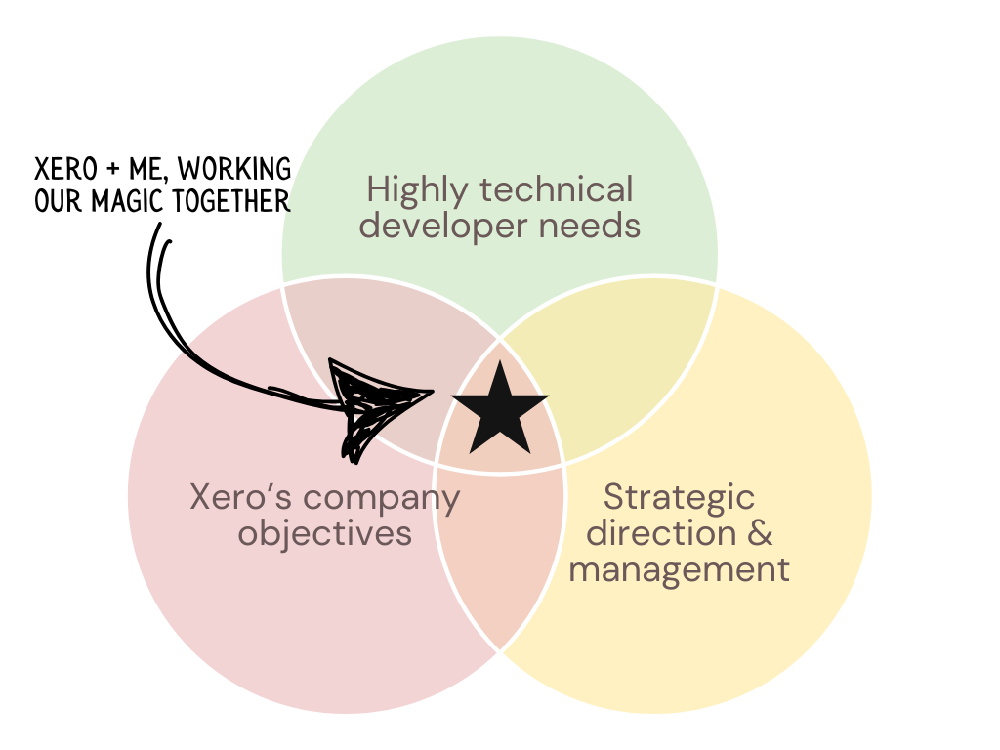
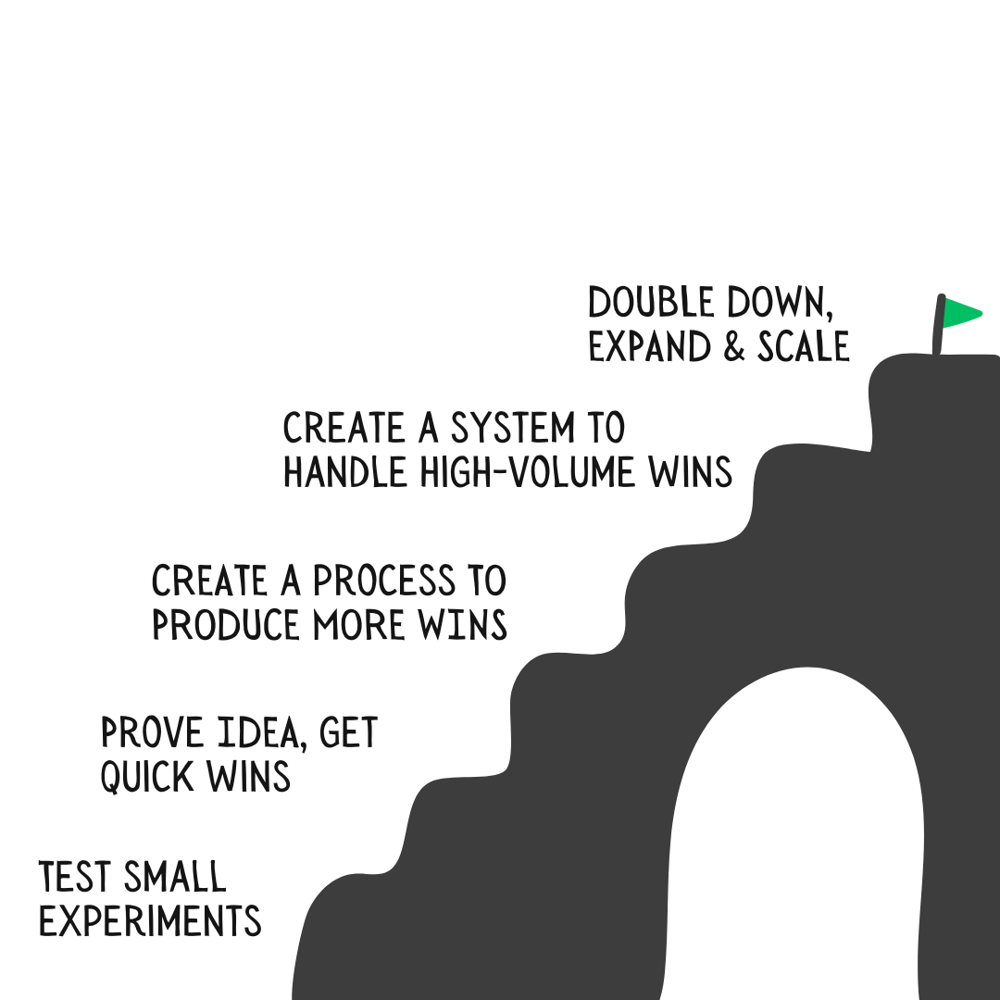

My name is Lucy Bloomfield and I'm *so* excited to submit my application for this role.
Rather than tell you what I do (and have done), I thought I'd show you my thought process that I've developed over the last ten years and across 200 businesses, ranging from $0 to $20m retail groups.
If you like this and how my brain works, I'd love to speak with you about the role.
(Your Future Senior Developer Marketing Manager?)
Before I start any kind of marketing, the first place I go to and work on is the point of conversion - the website. There's often more than enough traffic going to a website to achieve the business objective, but issues at certain conversion stages - you can often 2-4x your results just by investing into the site.
TLDR;
You don’t just need more marketing—you need marketing that moves the needle. I’ve helped over 200 businesses scale from zero to thousands of customers by building strategic campaign frameworks that generate results without needing big budgets.
When I look at marketing, I don't see social media posts or email marketing or Facebook Ads - I see a system with vats that need more eyeballs, and machinery that needs to be optimised to produce the most efficient "product" - aka conversions for the company.
My strength lies in bridging worlds—technical and commercial. From running my own SaaS company to consulting on high-conversion strategies, I’ve developed a knack for translating developer needs into business goals and vice versa.
That means I don’t just make pretty landing pages—I build ecosystems that serve both your internal teams and your community of developers.
What initially caught my attention with the Senior Developer Marketing Manager job descripton was the unique opportunity to blend the technical, with business, with marketing. If I could summarise the last ten years of my career, that's all I've been doing.
I don't just create plans—I bring them to life with practical execution and a relentless focus on impact. Whether it's designing a developer marketing campaign from scratch, operationalising content engines, or building internal processes that empower teams to move faster, I focus on creating real, tangible outcomes.
Once something’s working, I systemise it, scale it, and move on to the next opportunity. I bring a rare mix of strategic vision and hands-on execution, making me the kind of leader who doesn't just talk about growth — I architect it, test it, refine it, and drive it forward.
I'm agnostic when it comes to marketing tactics - influencer marketing? social media? emails? ads? Like, use and rely on them all... if they perform and continue to perform over time, at scale.
My initial run on any marketing efforts is about as many tests as possible, then moving based off what the data says from there - it's all about what's most cost-effective and results-effective.
If you’re looking for someone who’s ready to roll up their sleeves, think strategically, and make things happen — I’d love to speak.
Contact Me